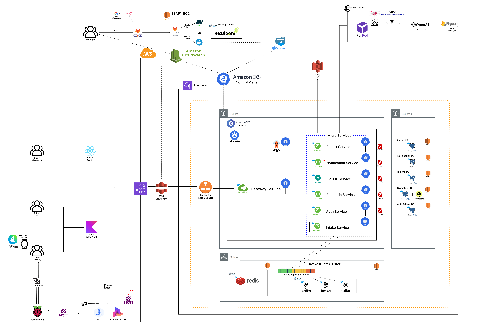
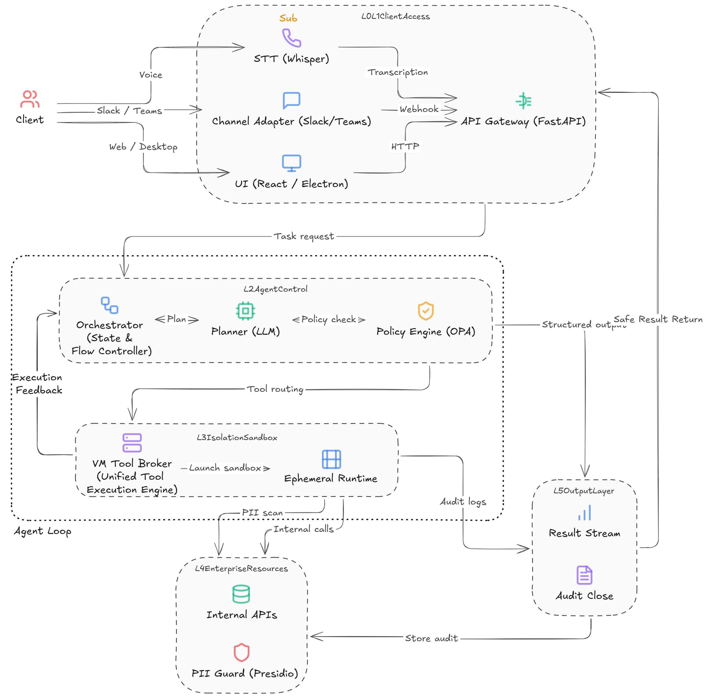
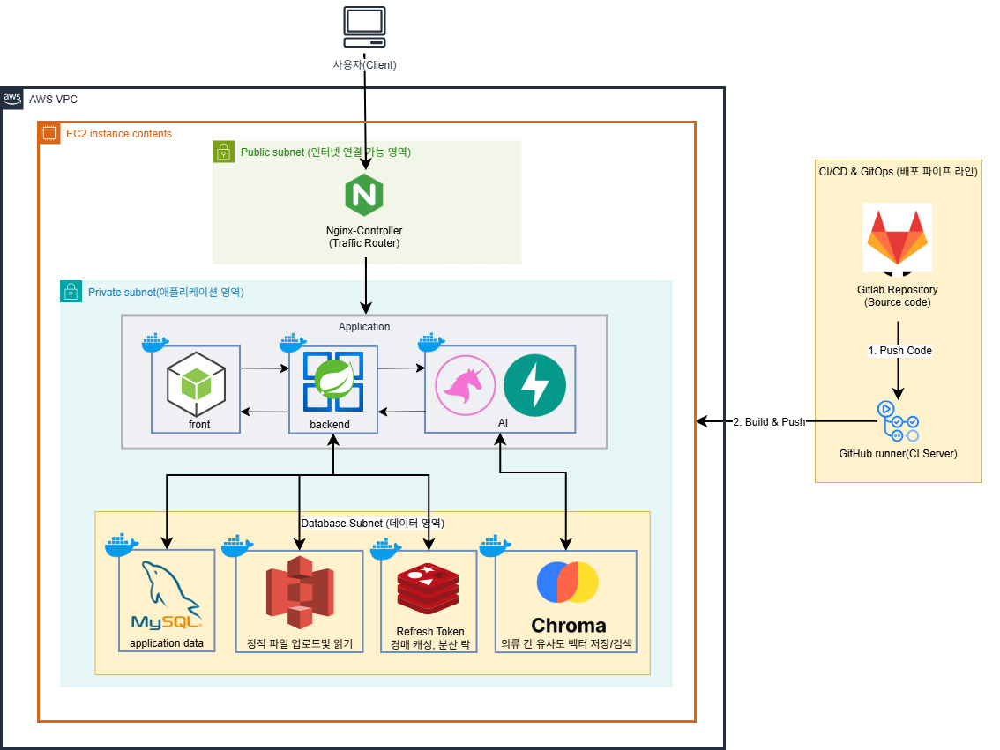

눈에 잘 보이지 않는 아키텍처와 배포 인프라가 팀의 개발 효율과 서비스 안정성을 받치는 기반이라고 생각합니다. 배포 흐름, 비동기 통신, 데이터 정합성에서 문제가 생기면 로그와 구조를 함께 확인하고, 같은 문제가 반복되지 않도록 개선하는 개발자가 되고 싶습니다.
Spring Boot 3 · Spring Security · FastAPI · JPA / MyBatis
Docker · Nginx · GitLab CI/CD · AWS EKS · ArgoCD · Kafka
MySQL · Redis / Redisson · ShedLock · TypeScript · Kotlin WebView
Spring Boot로 REST API, 인증/인가, 스케줄러, 비동기 처리, 예외 처리 구조를 구현했습니다. FastAPI로 S-Catch의 크롤링 작업 생성, 상태 조회, 결과 비교 API를 구현했습니다.
Docker, Nginx, GitLab CI/CD로 RE:FIT 배포 자동화를 구현했습니다. AWS EKS와 ArgoCD로 ReBloom 7개 MSA 서비스를 배포하고 운영 지표를 확인했습니다.
Redis, Redisson, ShedLock으로 대기열, 동시성, 스케줄러 중복 실행 문제를 다뤘습니다. TypeScript로 S-Catch 진행률 UI를 구현했고, Kotlin WebView로 ReBloom 모바일 브릿지를 구현했습니다.
총 4개의 프로젝트 상세 내역

여러 서비스가 EKS에서 동시에 실행되면서 스케줄러 중복 실행, 비동기 이벤트 추적, 모바일 WebView의 오프라인 저장과 센서 접근 처리가 필요했습니다.

국가마다 삼성닷컴 상품 목록과 상세 페이지 구조가 달라 수집 코드가 쉽게 깨졌고, 오래 걸리는 크롤링 작업의 진행 상태를 화면에서 확인하기 어려웠습니다.

배포 때마다 서버가 재시작되면 실시간 경매/채팅 세션이 끊길 수 있었고, AI 서버 호출과 동시 입찰 처리에서 병목과 정합성 문제가 발생할 수 있었습니다. CI 빌드도 반복 실행되며 시간이 길어졌습니다.
예매 오픈 시 요청이 한 번에 DB로 들어오면 커넥션이 부족해지고, 사용자가 이탈해도 active 토큰이 남아 다음 사용자의 진입이 늦어질 수 있었습니다.
로그와 지표로 문제를 추적하고, 다시 발생하지 않는 구조로 개선하는 개발자 안도형이었습니다.